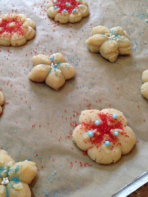

Ingredients
Easy to make christmas cookies to prepare with
your family!
- 1 cup butter flavored shortening
- 1 (3 ounce) package cream cheese, softened
- 1 cup white sugar
- 1 egg yolk
- 1 teaspoon vanilla extract
- 1 teaspoon orange zest
- 2 ½ cups all-purpose flour
- ½ teaspoon salt
- ¼ teaspoon ground cinnamon
Steps
- Preheat oven to 350 degrees F (175 degrees C).
- In a medium bowl, cream together shortening,
cream cheese, and sugar. Beat in egg yolk,
vanilla, and orange zest. Continue beating
until light and fluffy. Gradually stir in flour,
salt, and cinnamon. Fill the cookie press,
and form cookies on ungreased cookie sheet.
- Bake in preheated oven for 10 to 12 minutes.
Remove from cookie sheet, and cool on wire racks.